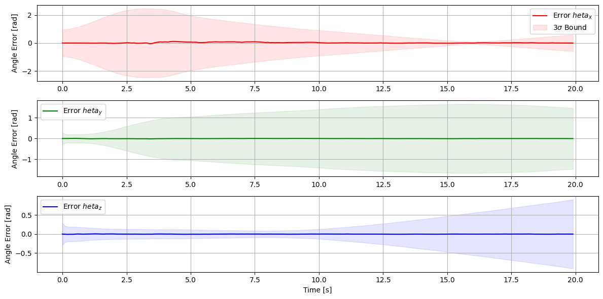
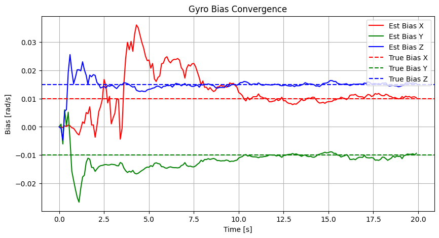

Tutorial 10: Multiplicative Extended Kalman Filter (MEKF)
This tutorial demonstrates the Multiplicative Extended Kalman Filter (MEKF) for spacecraft attitude estimation.
Unlike position vectors, quaternions live on a hypersphere (\(S^3\)) and have unit-norm constraints. Adding states linearly breaks this norm. MEKF solves this by using a multiplicative error state representation.
1. Theory Prerequisite: MEKF Formulation
We represent the true quaternion \(q\) as the multiplication of an estimated quaternion \(\hat{q}\) and an error quaternion \(\delta q\):
For small errors, the error quaternion is approximated by an attitude error vector \(\delta \vec{\theta} \in \mathbb{R}^3\):
State and Error State
Global State (\(7\times1\)): \(x = [q^T, \vec{\beta}^T]^T\) (Quaternion & Gyro Bias)
Error State (\(6\times1\)): \(\Delta x = [\delta \vec{\theta}^T, \delta \vec{\beta}^T]^T\)
Predict (Kinematics Integration)
Update
Given a reference vector in inertial frame \(\vec{v}_{I}\) and its body measurement \(\vec{v}_{B}\):
import numpy as np
import matplotlib.pyplot as plt
from opengnc.kalman_filters.mekf import MEKF
from opengnc.utils.quat_utils import axis_angle_to_quat, quat_normalize, quat_mult, quat_rot, quat_conj
from opengnc.sensors.sun_sensor import SunSensor # Standard vector sensor equivalent
np.random.seed(42)
print("Imports successful.")
Imports successful.
1.1 Simulating Attitude Dynamics and Sensors
We simulate a spacecraft rotating at a constant rate but measured with a GYRO that has Bias and Noise, and a vector sensor.
dt = 0.1 # 10 Hz rate
steps = 200
omega_true = np.array([0.05, -0.02, 0.1]) # True constant body rate [rad/s]
bias_true = np.array([0.01, -0.01, 0.015]) # Gyro Bias
z_ref_inertial = np.array([1.0, 0.0, 0.0]) # Inertial reference vector (e.g., Sun or Magnetic field)
# Initialize MEKF with zero bias and identity quaternion
mekf = MEKF(q_init=np.array([0, 0, 0, 1.0]), beta_init=np.zeros(3))
mekf.P = np.eye(6) * 0.1
mekf.Q = np.eye(6) * 0.0001 # Process noise
mekf.R = np.eye(3) * 0.01 # Measure noise
q_true = np.array([0, 0, 0, 1.0])
history_q_true = []
history_q_est = []
history_bias_true = []
history_bias_est = []
history_cov = []
history_err_theta = []
for k in range(steps):
# 1. Physics: Update true attitude
dq = axis_angle_to_quat(omega_true * dt)
q_true = quat_normalize(quat_mult(q_true, dq))
# 2. Sensor: Gyro Rate Measurement (Add bias + noise)
gyro_noise = np.random.normal(0, 0.001, 3)
omega_meas = omega_true + bias_true + gyro_noise
# 3. Sensor: Vector Measurement (e.g., Star Tracker/Sun Sensor)
z_body_true = quat_rot(quat_conj(q_true), z_ref_inertial)
meas_noise = np.random.normal(0, 0.01, 3)
z_body_meas = quat_normalize(z_body_true + meas_noise)
# 4. MEKF Cycle
mekf.predict(omega_meas, dt)
mekf.update(z_body_meas, z_ref_inertial)
# Calculate small angle error for plotting
# q_err = q_true * q_est_conj
q_err = quat_mult(q_true, quat_conj(mekf.q))
theta_err = 2 * q_err[0:3] # Approximate angle error
# Save History
history_q_true.append(q_true.copy())
history_q_est.append(mekf.q.copy())
history_bias_true.append(bias_true.copy())
history_bias_est.append(mekf.beta.copy())
history_err_theta.append(theta_err)
history_cov.append(mekf.P.diagonal().copy())
history_q_true = np.array(history_q_true)
history_q_est = np.array(history_q_est)
history_bias_true = np.array(history_bias_true)
history_bias_est = np.array(history_bias_est)
history_err_theta = np.array(history_err_theta)
history_cov = np.array(history_cov)
print("MEKF run complete.")
MEKF run complete.
time = np.arange(steps) * dt
plt.figure(figsize=(12, 6))
plt.subplot(3, 1, 1)
plt.plot(time, history_err_theta[:, 0], 'r', label='Error $\theta_x$')
plt.fill_between(time, -3*np.sqrt(history_cov[:,0]), 3*np.sqrt(history_cov[:,0]), color='red', alpha=0.1, label='$3\sigma$ Bound')
plt.ylabel('Angle Error [rad]')
plt.legend()
plt.grid(True)
plt.subplot(3, 1, 2)
plt.plot(time, history_err_theta[:, 1], 'g', label='Error $\theta_y$')
plt.fill_between(time, -3*np.sqrt(history_cov[:,1]), 3*np.sqrt(history_cov[:,1]), color='green', alpha=0.1)
plt.ylabel('Angle Error [rad]')
plt.legend()
plt.grid(True)
plt.subplot(3, 1, 3)
plt.plot(time, history_err_theta[:, 2], 'b', label='Error $\theta_z$')
plt.fill_between(time, -3*np.sqrt(history_cov[:,2]), 3*np.sqrt(history_cov[:,2]), color='blue', alpha=0.1)
plt.xlabel('Time [s]')
plt.ylabel('Angle Error [rad]')
plt.legend()
plt.grid(True)
plt.tight_layout()
plt.show()

1.2 Gyro Bias Estimation
Notice how the estimated bias converges to the true bias values.
plt.figure(figsize=(10, 5))
plt.plot(time, history_bias_est[:, 0], 'r-', label='Est Bias X')
plt.plot(time, history_bias_est[:, 1], 'g-', label='Est Bias Y')
plt.plot(time, history_bias_est[:, 2], 'b-', label='Est Bias Z')
plt.axhline(y=bias_true[0], color='r', linestyle='--', label='True Bias X')
plt.axhline(y=bias_true[1], color='g', linestyle='--', label='True Bias Y')
plt.axhline(y=bias_true[2], color='b', linestyle='--', label='True Bias Z')
plt.title('Gyro Bias Convergence')
plt.xlabel('Time [s]')
plt.ylabel('Bias [rad/s]')
plt.legend()
plt.grid(True)
plt.show()
